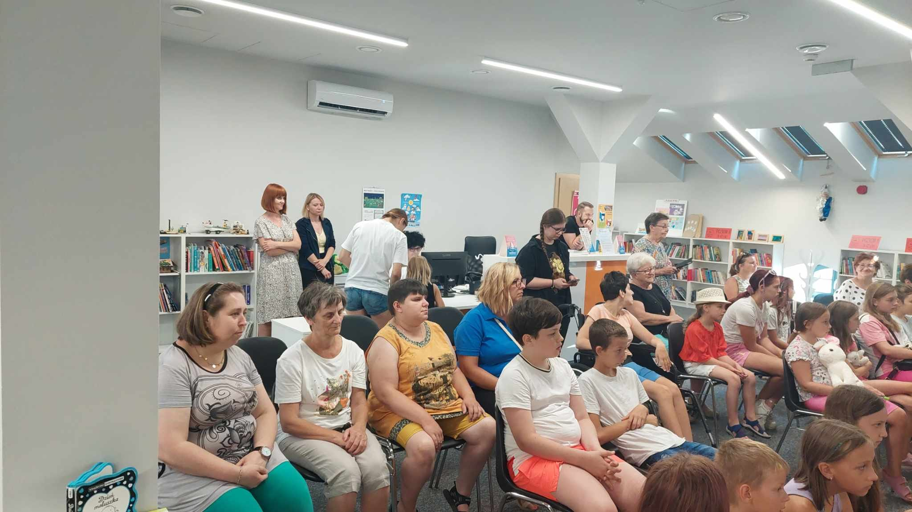

Środowiskowy Dom Samopomocy
Jest to ośrodek wsparcia dla osób z zaburzeniami psychicznymi obojga płci i działa jako ośrodek dziennego pobytu typu A, B i C:
Jest to ośrodek wsparcia dla osób z zaburzeniami psychicznymi obojga płci i działa jako ośrodek dziennego pobytu typu A, B i C:
Pomoc w codziennym funkcjonowaniu w Środowiskowym Domu Samopomocy "Przystań" obejmuje wsparcie uczestników w podstawowych czynnościach, takich jak gotowanie, zakupy czy utrzymanie porządku. Dodatkowo placówka pomaga w załatwianiu spraw urzędowych i wizytach lekarskich, co ułatwia codzienne życie i zwiększa samodzielność podopiecznych.
Wsparcie terapeutyczne i rehabilitacyjne w Środowiskowym Domu Samopomocy "Przystań" obejmuje arteterapię, terapię zajęciową i ruchową, które poprawiają funkcjonowanie psychiczne i fizyczne uczestników. Placówka wspiera również rehabilitację emocjonalną i społeczną, pomagając w integracji społecznej i rozwoju osobistym.
Integracja społeczna w Środowiskowym Domu Samopomocy "Przystań" polega na organizowaniu różnorodnych aktywności, które umożliwiają uczestnikom nawiązywanie i utrzymywanie relacji społecznych. Placówka organizuje spotkania, wydarzenia towarzyskie, wyjazdy oraz warsztaty, które sprzyjają wymianie doświadczeń, budowaniu więzi oraz aktywnemu uczestnictwu w życiu społeczności lokalnej.
W Środowiskowym Domu Samopomocy "Przystań" organizujemy wydarzenia sprzyjające integracji społecznej i aktywnemu spędzaniu czasu. Imprezy tematyczne, takie jak Halloween czy Mikołajki, tworzą przyjazną atmosferę i umożliwiają nawiązywanie relacji. Gry integracyjne wspierają zabawę, współpracę i budowanie więzi. Uczestnicy mają także dostęp do siłowni oraz wyciszanego pokoju, zapewniającego spokój i regenerację. Dzięki tym inicjatywom każdy może rozwijać pasje i czuć się częścią wspólnoty.
 Kontakt
Kontakt Gdzie
nas
znajdziesz ?
Gdzie
nas
znajdziesz ? Środowiskowy Dom Samopomocy "Przystań" znajduje się przy ul. Iłżeckiej 33 w Ostrowcu Świętokrzyskim (kod pocztowy: 27-400). Placówka działa od poniedziałku do piątku w godzinach od 7:00 do 15:00, oferując wsparcie i pomoc osobom potrzebującym w ramach swojej działalności środowiskowej. Jest to miejsce, które stwarza możliwość uczestnictwa w różnorodnych zajęciach i integracji społecznej